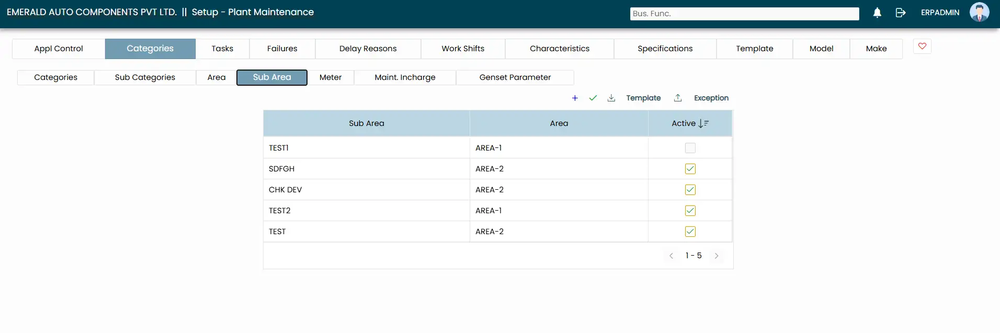

<div data-category="Plant Maintenance" data-title="Sub Area" data-updated="January 23, 2026" data-contributors="RoadmapIT" data-breadcrumb="Home,Plant Maintenance,Sub Area">
  <div class="page-content">
    <h5>Sub Area</h5>
    <p>A subarea is a subdivision of a location that indicates a more specific or detailed position of a functional object within a plant section. A subarea can be used to further classify and group functional objects according to their physical or logical placement in the plant. A subarea can be assigned to a functional location or an equipment.</p>
    <p>The sub location is manual created and the location defined is associated with its corresponding Sub location. The Sub location cannot be modified or deleted when the child record exists, but the descriptions can be modified. The Sub Area is defined here.</p>

    <h5>Navigation path:</h5>
    <p class="fs-6">Plant Maintenance \ Setup \ Setup-Plant Maintenance \ Category \ Sub Area</p>

    
    <ul style="list-style-type: none; align-content: center">
      <li class="mouse-icon">
        Click
        <i class="bi bi-plus fs-4 mx-2 text-primary"></i>
        to add
      </li>
      <li class="mouse-icon">Enter the Sub Area</li>
      <li class="mouse-icon">Enter/Select the Area.</li>
      <li class="mouse-icon">
        Click
        <i class="bi bi-check-lg fs-4 mx-1 text-success"></i>
        to save
      </li>
      <li class="mouse-icon">Function of the Template button is to download the template in Excel format.</li>
      <li class="mouse-icon">
        Click
        <i class="bi bi-upload fs-5 mx-1 text-muted"></i>
        Upload button helps to upload the files.
      </li>
      <li class="mouse-icon">
        Click
        <i class="bi bi-download fs-5 mx-1 text-muted"></i>
        Download button shows the details in Excel format.
      </li>
      <li class="mouse-icon">View Exception shows the Exception details</li>
    </ul>
  </div>
</div>
